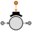
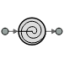
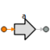
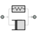
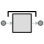

| Symbol | Name | Description |
| Lever2 [+] | Lever Model (two points) | |
| Lever3 [+] | Lever Model (three points) | |
| R_AbsoluteSensorAcceleration [+] | Absolute angular acceleration sensor | |
| R_AbsoluteSensorAngle [+] | Absolute angular position sensor | |
| R_AbsoluteSensorTorque [+] | Torque sensor | |
| R_AbsoluteSensorVelocity [+] | Absolute angular velocity sensor | |
| R_ActuatorAcceleration [+] | Rotational acceleration actuator | |
| R_ActuatorTorque [+] | Torque actuator | |
| R_ActuatorVelocity [+] | Angular velocity actuator | |
| R_BearingFriction [+] | Bearing with Coulomb friction | |
|  | R_Brake [+] | Frictional brake |
| R_Clutch [+] | Clutch based on Coulomb friction | |
| R_Damper [+] | Ideal rotational damper | |
| R_Efficiency [+] | Mechanical efficiency | |
| R_ElastoBacklash [+] | Helicoidal spring and damper with backlash | |
| R_FixedTorque [+] | Fixed torque | |
| R_FixedVelocity [+] | Fixed angular velocity | |
| R_Gear [+] | Gearbox | |
| R_GearFriction [+] | Gear with mesh efficiency and bearing friction (stuck/rolling possible) | |
| R_GearIdeal [+] | Ideal Gear without inertia | |
| R_GearIdealR2T [+] | Gearbox transforming rotational into translational motion | |
| R_Inertia [+] | Rotating mass with inertia | |
| R_Piston [+] | Dynamic model of an angular Piston submitted to the forces of pressure, spring, friction ... | |
| R_RelativeSensorAcceleration [+] | Relative acceleration sensor | |
| R_RelativeSensorAngle [+] | Relative angle sensor | |
| R_RelativeSensorSpeed [+] | Relative speed sensor | |
|  | R_Spring [+] | Ideal helicoidal spring |
| R_SpringBacklash [+] | Helicoidal spring with backlash | |
| R_SpringDamper [+] | Linear spring and linear damper in parallel | |
| R_Stop [+] | Rotating mass with inertia and stops | |
| T_AbsoluteSensorAcceleration [+] | Absolute acceleration sensor | |
| T_AbsoluteSensorForce [+] | Absolute force sensor | |
| T_AbsoluteSensorPosition [+] | Absolute position sensor | |
| T_AbsoluteSensorVelocity [+] | Absolute velocity sensor | |
|  | T_ActuatorAcceleration [+] | Acceleration actuator |
| T_ActuatorForce [+] | Force actuator | |
| T_ActuatorPosition [+] | Position actuator | |
| T_Damper [+] | Ideal linear damper | |
| T_EWall [+] | Wall with viscous coefficient | |
| T_ElastoGap [+] | Ideal spring damper combination with gap | |
| T_FixedAcceleration [+] | Fixed translational acceleration | |
| T_FixedForce [+] | Fixed force | |
| T_FixedPosition [+] | Fixed translational position | |
| T_Piston [+] | Dynamic model of a Piston submitted to the forces of pressure, spring, friction ... | |
| T_Rod [+] | Rod without inertia | |
| T_SlidingMass [+] | Sliding mass with inertia | |
| T_Spring [+] | Ideal linear spring | |
| T_SpringBacklash [+] | Linear spring with backlash | |
|  | T_SpringDamper [+] | Ideal linear damper and spring in parallel |
|  | T_Stop [+] | Sliding mass with hard stop and Stribeck friction |
| T_Wall [+] | Wall with restitution coefficient |
Document generated automatically (Date: 2019:01:23, Time: 00:19:45)